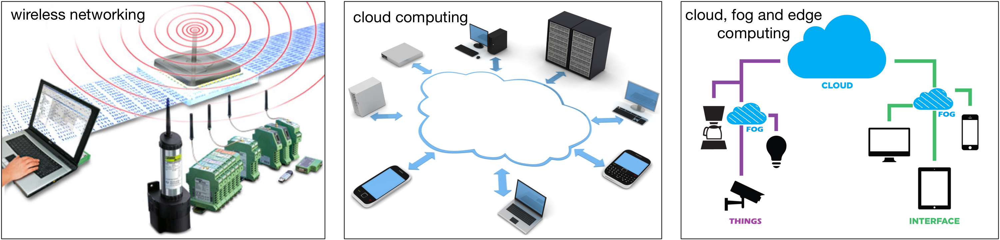

Research Description by Topics
Energy Systems
The conventional power grid is undergoing two major developments that are reshaping its economic and architectural structure. On the supply side, increasing penetration of renewable energy is pushing the system operator to rethink their marketing strategy and redesign the existing infrastructure, such that the high intermittency associated with the distributed energy generation can be mitigated. On the demand side, there is an increasing penetration of battery energy storage (BES) devices (e.g., residential batteries and electric vehicles), which on the one hand facilitate power balancing as they delink the time of generation and consumption, and thus improve power quality and reliability, defer or eliminate costly reserve and further increase the availability and value of distributed energy generation. On the other hand, without a coordinated control, BES devices not only yield significant randomness in the electricity consumption in temporal domain, but also generates considerable amount of uncertain demand patterns in the spatial domain (due to the mobility of electric vehicles). Moreover, BES devices introduce up-front uncertainty for system operators since both the capital cost and potential economic value could vary from tens of thousands into tens of millions of dollars per year for large-scale systems, and this becomes even worse when the uncertain lifetime of BES devices is taken into account. Towards this end, a significant effort is required to characterize the economic and lifetime performance of BES devices and the associated optimal policies that can be used for maximizing the economic value of the BES devices.
In recent years, we have been working on many problems regarding various aspects of energy systems, especially battery energy storage and electric vehicles. We propose new models and algorithms for analyzing the economic and lifetime performance of battery energy storage in smart power grids. We also study how to integrate renewable energy in future smart power grids with electric vehicle battery charging stations. Meanwhile, we have developed novel distributed algorithms for the energy management of cooperative microgrids.
 |
X. Tan, Y. Wu and D.H.K. Tsang, “Pareto Optimal Operation of Distributed Battery Energy Storage Systems for Energy Arbitrage under Dynamic Pricing”, IEEE Transactions on Parallel and Distributed Systems, Vol. 27, No. 7, 2103-2115, July 2016.
X. Tan, Y. Wu and D.H.K. Tsang, “A Stochastic Shortest Path Framework for Quantifying the Value and Lifetime of Battery Energy Storage under Dynamic Pricing”, IEEE Transactions on Smart Grid, vol. 8, no. 2, pp. 769-778, March 2017.
Y. Wu, X. Tan, L. Qian, D.H.K. Tsang, W. Song, and L. Yu, “Optimal Pricing and Energy Scheduling for Hybrid Energy Trading Market in Future Smart Grid”, IEEE Transactions on Industrial Informatics, vol. 11, no. 6, pp. 1585-1596, Dec. 2015.
T. Liu, X. Tan, B. Sun, Y. Wu, and D.H.K. Tsang, “Energy Management of Cooperative Microgrids: A Distributed Optimization Approach", International Journal of Electrical Power and Energy Systems, to appear.
W. Li, X. Tan, B. Sun, and D.H.K. Tsang, “Optimal Power Dispatch of a Centralized Electric Vehicle Battery Charging Station with Renewables”, under review.
Smart Cities
The concept of smart cities is an urban development vision aiming to improve the cities’ sustainability and the citizens’ quality of life by means of information and communication technology. By 2050, 70% of the world's population is projected to live and work in cities, with transportation and energy as major constituents. Battery electric vehicles have significantly higher energy efficiency when compared to gasoline- and diesel-fueled vehicles, which are widely believed to become mainstream in the coming decades. Therefore, it is envisioned that there will be a large number of mobile batteries, facilitated by electric vehicles either with or without drivers, moving around in future smart cities. As a result, two orginally separated large systems, i.e., the power system and the transportation system, will become increasingly correlated both in their design and operation, which yields many new challenges and requires a substantial research.
We are interested in all kinds of applications in smart cities, but primarily focus on transportation and energy. We have been working on smart homes, smart buildings, and smart grids, in which electric vehicles plays a very important role. In particular, we investigate the energy refueling of electric vehicles in smart cities based on battery-swapping mode and plug-in charging mode. We believe both energy refueling modes will co-exist in future smart cities in the long run. Meanwhile, discharging of electric vehicles will also be a very important part of future energy-transportation nexus, which is a prominent example of smart city application.
 |
X. Tan, D.H.K. Tsang et al, “Harnessing Multi-dimensional Flexibility of Autonomous Vehicles for Energy Management Optimization in Smart Cities,” working paper.
X. Tan, G. Qu, B. Sun, N. Li, and D.H.K. Tsang, “Optimal Scheduling of Battery Charging Stations Serving Electric Vehicles Based on Battery Swapping”, IEEE Transactions on Smart Grid, to appear.
B. Sun, X. Tan, and D.H.K. Tsang, “Optimal Charging Operation of Battery Swapping and Charging Stations with QoS Guarantee", IEEE Transactions on Smart Grid, to appear.
B. Sun, Zhe Huang, X. Tan, and D.H.K. Tsang, “Optimal Scheduling for Electric Vehicle Charging with Discrete Charging Levels in Distribution Grid”, IEEE Transactions on Smart Grid, to appear.
W. Li, X. Tan, and D.H.K. Tsang, “Smart Home Energy Management Systems Based on Non-Intrusive Load Monitoring", in Proceedings of IEEE International Conference on Smart Grid Communications (IEEE SmartGridComm 2015), Nov. 2015.
S. Agheb, X. Tan, and D.H.K. Tsang, “Model Predictive Control of Integrated Room Automation Considering Occupants Preference", in Proceedings of IEEE International Conference on Smart Grid Communications (IEEE SmartGridComm 2015), Nov. 2015.
Networking and Distributed Computing
Fog computing is a decentralized computing infrastructure in which data, computation, storage and applications are distributed in the most logical, efficient place between the data source and the cloud. Fog computing essentially extends cloud computing and services to the edge of the network, bringing the advantages and power of the cloud closer to where data is created and acted upon. The goal of fog computing is to improve efficiency and reduce the amount of data transported to the cloud for processing, analysis and storage.
With the increasing development of Internet of Things, e.g., tremendous networked and heterogeneous devices in smart cities or connected vehicles, we have an excellent opportunity to bring the ‘cloud’ closer to the edge and users as ‘fog’. Previously, we have worked on the optimal resource allocation for LET-A downlink with heterogeneous traffic types. Recently, we start to investigate many interesting engineering and economic problems in vehicular fog computing with slow-driving and/or parked vehicles.
|  |
X. Tan, and D.H.K. Tsang et al,“Temporal Flexibility Pricing in Vehicular Fog Computing based on Parked Vehicles,” working papers.
S. Niafar, X. Tan, and D.H.K. Tsang, “Optimal Downlink Scheduling for Heterogeneous Traffic in LET-A Based on MDP and Chance-Constrained Approaches”, ACM Springer Mobile Networks and Applications (MONET) Journal, 2015.
S. Niafar, X. Tan and D.H.K. Tsang, “The Optimal User Scheduling for LTE-A Downlink with Heterogeneous Traffic Types”, [invited paper], in Proceedings of 10th International Conference on Heterogeneous Networking for Quality, Reliability, Security and Robustness (Qshine 2014), Rhodes, Greece, 2014.